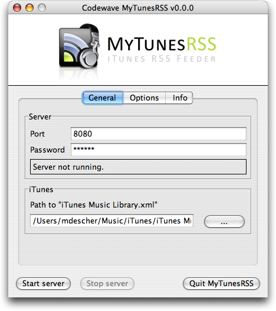
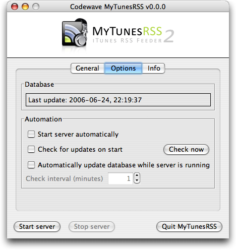
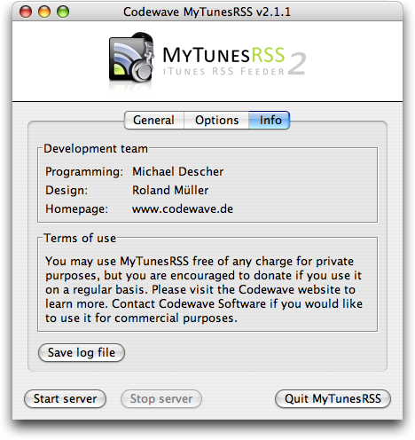
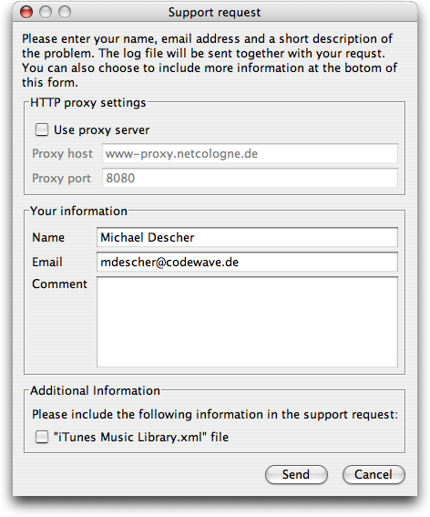
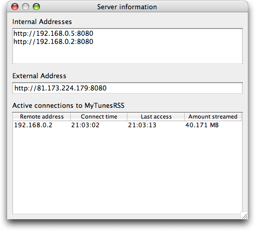

The configuration
After starting the application you see the configuration panel. The settings are placed on three tabs. The first tab contains the general settings.
You can choose the port the server is listening for incoming connection freely. The default port 8080 should be okay in almost call cases. On some systems use of ports below 1024 might be restricted.
For security reasons you have to choose a password for protecting access to the web application. The server will not start without a password. The password is stored as plain text, so please do not use a password you are using to protect critical data elsewhere.
In the lower part of the general settings tab you have to specify the path to the "iTunes Music Library.xml" file on your system. You can either enter the path directly into the text field or use the (...) button to browse your harddisk and look it up. On the very first start of MyTunesRSS (if you did not have an older version installed) this file is looked up automatically.
The second tab shows additional options. Topmost you can see the status of the database integrated in MyTunesRSS. This database contains all the data from the "iTunes Music Library.xml" file. It is created or updated automatically each time you start the server. Usually only tracks with a modification date later than the last update are refreshed. In some cases it is possible that iTunes refreshed certain data without updating the modification time. If you encounter any problems with refreshing, just check the option to ignore timestamps. Depending on your iTunes library size, an update will take longer with this option checked. If it does not take too long, you can always have the option checked to be sure the MyTunesRSS database is always in sync with iTunes. If you have severe problems with the database, you can also delete is completely and have it rebuilt from scratch. Click the button next to the status to do so. Be warned that playlists created within MyTunesRSS will be lost by doing so.
In "automation" you can select to start the server automatically when starting MyTunesRSS. This way you can put the application into your system's startup items and have the server up and running when booting your operating system. Furthermore you can have MyTunesRSS automatically check for new versions on startup. This option is not available in case you choose to start the server automatically. You can also look for new versions manually. When the server is running you can have it automatically check for changes in iTunes and have the internal database updated. Select the number of minutes between these checks. This is the time between the finish of one update and the start of the next one, i.e. if the update itself takes 5 minutes and the time is set to 10 minutes, the second update check will start 15 minutes after the first one started.
On the third page you can find information about the development team. Please donate if you find the programm useful. In case you have problems and need support, you can click the button on this page to get a support form. On this form you can enter your name and email address and a problem description. The log file of the application will always be attached to the support request. You can also optionally include your "iTunes Music Library.xml" file to the request. This might help solving some problems. If you are connected through a proxy server to the internet, you have to configure the proxy as well for making the online support request work. This same form will also pop up for sending a bug report if any unexpected error occurs.
Below the configuration pages are three buttons for starting and stopping the server and for quitting the program. You cannot change any settings while the server is running. Usually you have a single local address for accessing MyTunesRSS with a browser. In case you have multiple network interfaces, e.g. LAN and WLAN, you have multiple addresses as well. The information button next to the server status opens a simple dialog which displays all local addresses and your external address if you are connected to the internet and it can be determined. All active connections to MyTunesRSS are also shown in the server status window.
When quitting the program while the server is running, it is stopped. The window position and all settings are automatically saved for the next start.